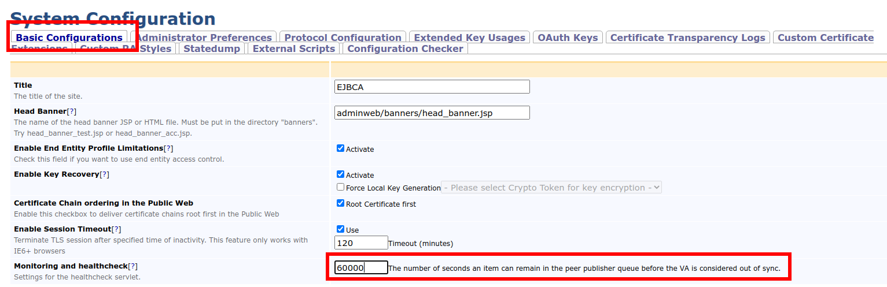

Monitoring of VAs
ENTERPRISE This is an EJBCA Enterprise feature.
A common requirement is to keep the OCSP responder in sync with the CA. For example, the Baseline Requirements 1.7.2 stipulates the following requirement on how often the CA must update the OCSP responder:
For OCSP responses with validity intervals less than sixteen hours, then the CA SHALL update the information provided via an Online Certificate Status Protocol prior to one-half of the validity period before the nextUpdate.
For OCSP responses with validity intervals greater than or equal to sixteen hours, then the CA SHALL update the information provided via an Online Certificate Status Protocol at least eight hours prior to the nextUpdate, and no later than four days after the thisUpdate.
Furthermore, if publishing revocation information to one or more OCSP responders is delayed for some reason, the user may get inconsistent results, depending on the OCSP responder receiving the request. While it is inevitable that there will be a certain delay in updating the OCSP responders, it may be of interest to evict traffic from the OCSP responders which are not updated with the latest information.
To achieve this, EJBCA offers a separate servlet that can be queried by a monitoring system (e.g. a load balancer). The servlet responds with a list of the VAs that are out of sync. A VA is considered out of sync if the peer publisher publishing to the VA has at least one item in its queue older than X seconds, where X is known as the VA status time constraint.
Requirements for the Monitoring System
The following requirements apply for the Monitoring System:
The monitoring system should preferably be able to parse JSON since this is the output produced by the servlet.
The monitoring system must be able to query the servlet on the CA directly since only the CA can be aware of which VAs are out of sync.
Configure the VA Status Time Constraint
The VA status time constraint is configured in the System Configuration, under the Basic Configurations tab.
The default Monitoring and healthcheck servlet value is 14400 seconds (4 hours).

Query the VA Status Servlet
Query For the Status Of All VAs
Make an HTTP GET request without any parameters. For example:
> curl -s http://localhost:8080/ejbca/publicweb/healthcheck/vastatus | jq .{ "error": false, "outOfSync": [ { "name": "VA Peer Publisher 2" }, { "name": "VA Peer Publisher 3" } ]}Query For the Status Of a Single VA
Make an HTTP GET request with a parameter name set to the name of the publisher publishing to the VA being monitored. For example:
> curl -s http://localhost:8080/ejbca/publicweb/healthcheck/vastatus?name=VA+Peer+Publisher+2 | jq .{ "error": false, "outOfSync": [ { "name": "VA Peer Publisher 2" } ]}Response Content
The servlet returns a JSON response with the following schema:
{ "$schema": "http://json-schema.org/draft-04/schema#", "type": "object", "properties": { "error": { "type": "boolean" "description", "Indicates if the servlet could fulfill the request." }, "message": { "type": "string", "description": "A description of the error (if any)." } "outOfSync": { "type": "array", "items": [ { "type": "object", "properties": { "name": { "type": "string", "description": "The name of a publisher publishing to a VA being out of sync." } }, "required": [ "name" ] } ] } }, "required": [ "error" ]}The JSON response always contains an error key set to true if the servlet can not fulfill the request. If error is true, there is a message string containing a description of the error. The monitoring system may then proceed to query the next CA in the cluster (if a cluster is used) or create an alarm.
If error is false, the request succeeded. The outOfSync array contains a list of publisher names corresponding to the VAs out of sync on the system. A load balancer can then be instructed to evict traffic from these VAs.
If all VAs are out of sync, an HTTP status code of 200 is returned to prevent a load balancer from taking all OCSP responders out of operation at the same time.
HTTP Status Codes
|
Status Code |
Meaning |
Example response |
|
200 |
Either all VA(s), whose status is requested, are in sync with the CA, or all VA(s) are out of sync. |
{ "error": false, "outOfSync": [] } |
|
401 |
The monitoring system is not authorized to access the VA status servlet. |
{ "error": true, "message": "Requests from <IP here> are not authorized." } |
|
500 |
An error occurred when querying the servlet. |
{ "error": true, "message": "<Error description here>" } |
|
503 |
One or more VAs, whose status are requested, are out of sync. The monitoring system should proceed to instruct the load balancer from evicting traffic from these VAs. |
{ "error": false, "outOfSync": [ { "name": "VA Peer Publisher 2" } ] } |
Configure Access to the VA Status Servlet
It is possible to restrict or allow access to the servlet by whitelisting IP addresses. This is done using the healthcheck.authorizedips property in ejbca.properties. The default is to only allow requests originating from localhost (127.0.0.1).
Supported Publishers
The VA status servlet monitors the EJBCA Enterprise Validation Authority Peer Publisher. The legacy Peer Publisher Validation Authority Publisher (Legacy) is not supported.
Publisher Settings
The queue must be used by the publisher, i.e. depending on what you want to publish to the VA, you must select at least one of the options Use queue for CRLs, Use queue for certificates, and Use queue for OCSP responses.
The setting Keep successfully published items in database should not be used. For more information on publisher settings, see the Publishers Overview.